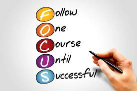

Ways to improve your concentration
Always focus on your own Work and enjoy your work ,Ways to do that are as follows:-
- Eliminate distractions
- Reduce multitasking
- Practice mindfulness and meditation
- Get more sleep
- Choose to focus on the moment
with a fexible layout
I'm an undergrad student of Banasthali Vidyapith.I'm from lucknow :).Currently interning with Mckisney&Company I'm fun-loving girl and I love shopping a lot .I'm an Army brat and also a basketball Player.
Always focus on your own Work and enjoy your work ,Ways to do that are as follows:-

Stay Happy and Enjoy your Life ,ways to do that are as follow:-